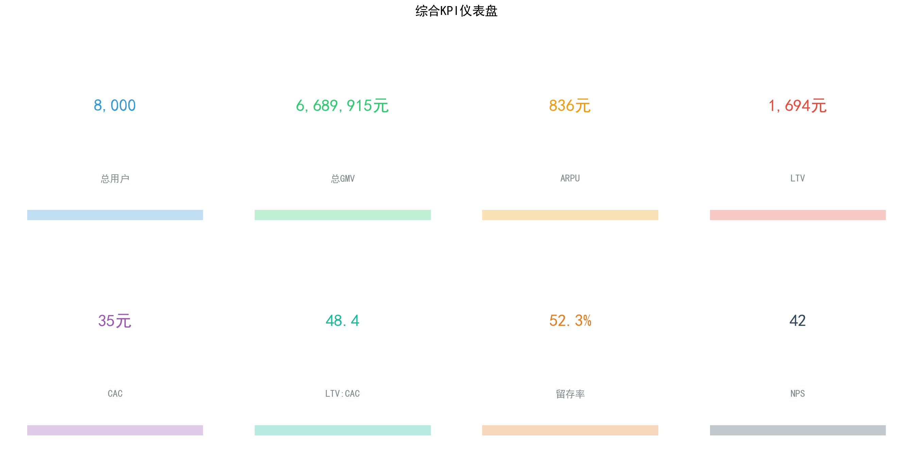
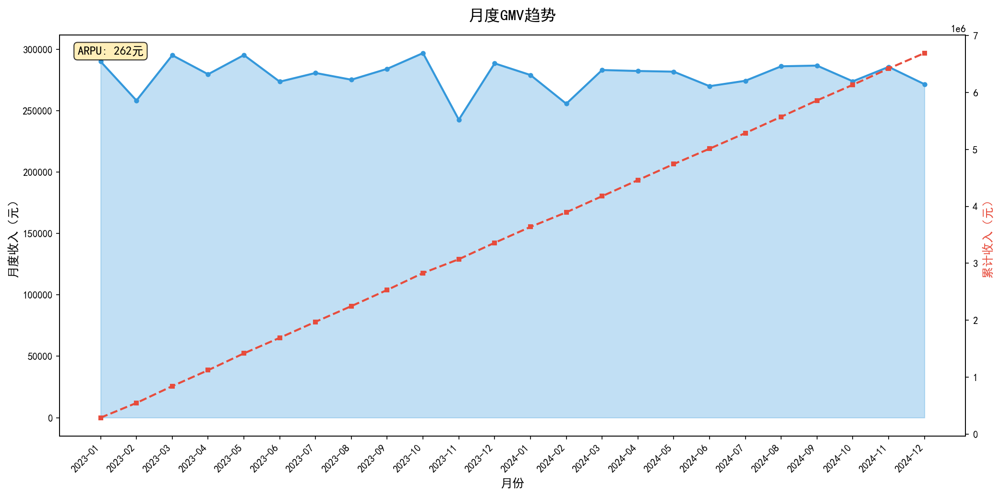
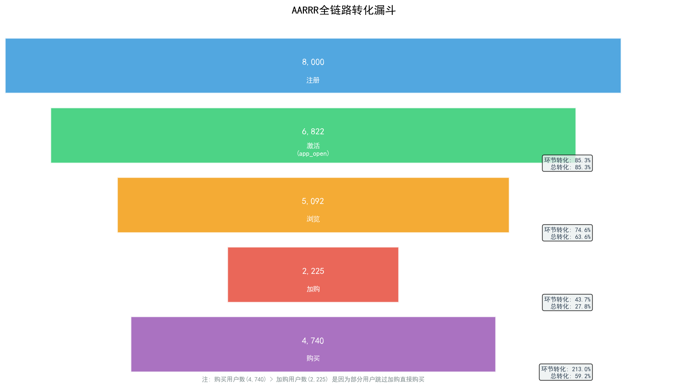
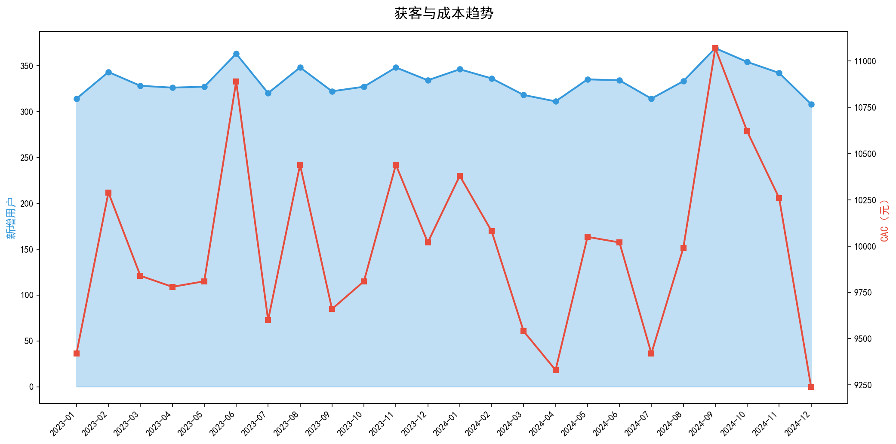
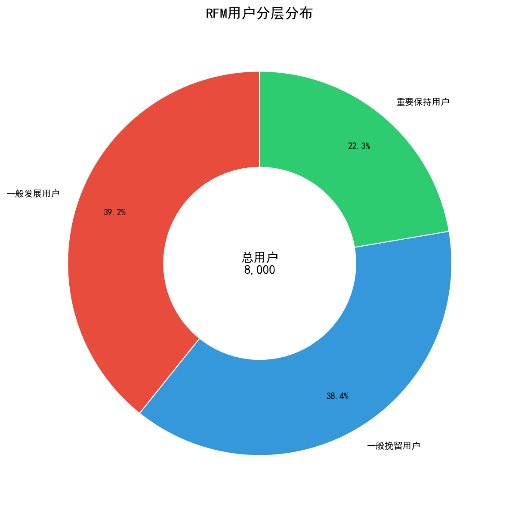
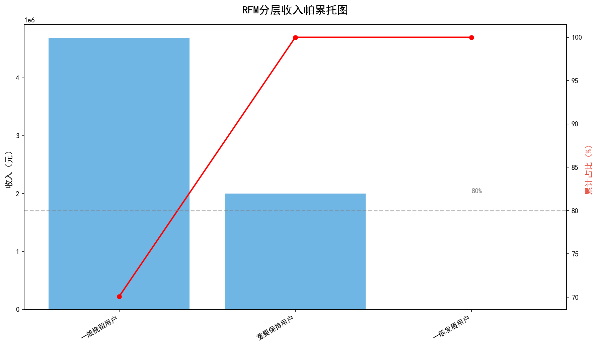
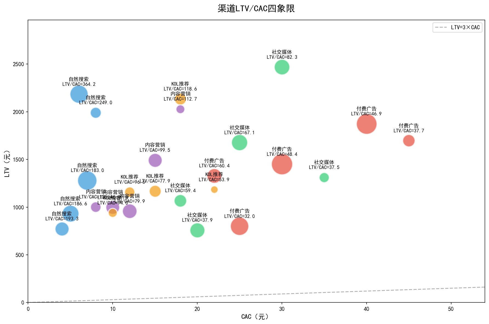
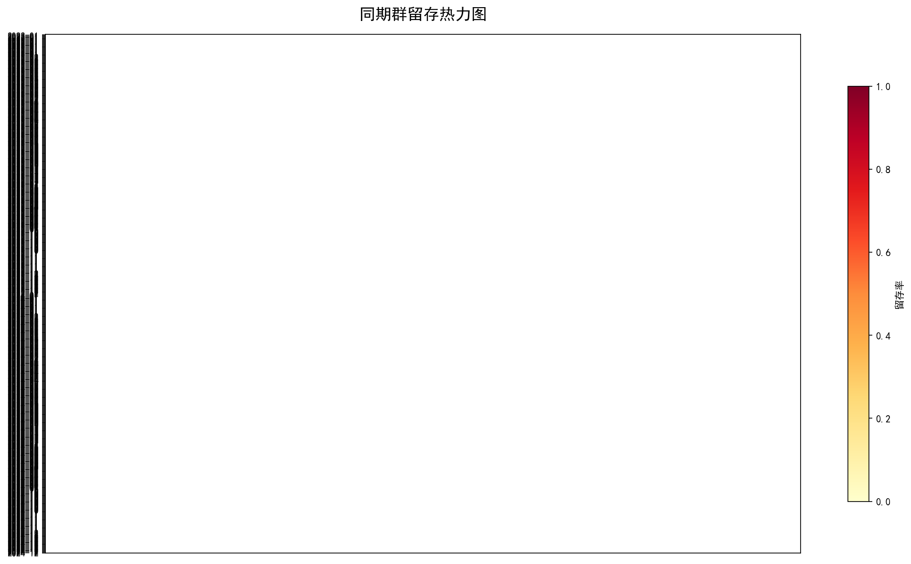
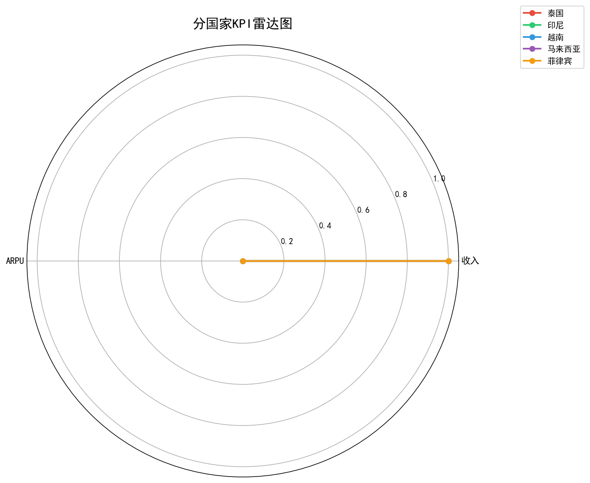

跨境电商 · 全案诊断
8,000 用户 · 55,203 订单 · 1,130.64 万元 · 5 个国家 · 5 个品类
Agenda · 报告结构
核心指标仪表盘、月度趋势、健康度判断
AARRR 全链路转化、获客成本、瓶颈定位
RFM 八层分群、帕累托效应、收入集中度
LTV/CAC 分析、四象限定位、回报周期
同期群留存、分国家对比、品类复购
核心发现、资源优化、30/90/180 天行动
Section · 01
总览平台核心指标，评估整体运营健康度
Metrics · 核心指标汇总
总注册用户
活跃率 100%
总订单数
↑ 持续增长
总收入
↑ 稳步上升
复购率
↑ 优秀水平
Dashboard · KPI 可视化

Trend · 月度趋势

Section · 02
全链路转化分析，精准定位增长瓶颈
Funnel · 全链路转化

CAC · 获客成本趋势

Section · 03
八类用户价值分群，帕累托效应验证
Segment · 八类用户分层

Pareto · 收入集中度

Section · 04
渠道效率四象限，精准配置营销资源
ROI · 分渠道效率对比
| 渠道 | LTV (元) | CAC (元) | ROI | 评级 |
|---|---|---|---|---|
| 自然搜索 | 1,433.82 | 8.00 | 179.23 | 最优 |
| 内容营销 | 1,277.81 | 18.00 | 70.99 | 优秀 |
| KOL推荐 | 1,354.93 | 22.00 | 61.59 | 良好 |
| 社交媒体 | 1,475.79 | 35.00 | 42.17 | 合格 |
| 付费广告 | 1,443.66 | 45.00 | 32.08 | 待优化 |
Quadrant · 渠道效率矩阵

Section · 05
同期群留存、分国家对比、品类与复购深度洞察
Cohort · 留存热力图

Market · 五国市场对比

| 国家 | 成熟度 | 策略 |
|---|---|---|
| 🇹🇭 泰国 | 成熟 | 深耕高价值 |
| 🇻🇳 越南 | 成长 | 扩大规模 |
| 🇮🇩 印尼 | 成长 | 品类拓展 |
| 🇵🇭 菲律宾 | 新兴 | 基础建设 |
| 🇲🇾 马来西亚 | 成熟 | 精细化运营 |
Strategy · 核心发现与行动
| 优先级 | 渠道 | 国家 | 预算 |
|---|---|---|---|
| P0 | 自然搜索 | 泰国 | 30% |
| P0 | KOL推荐 | 印尼 | 25% |
| P1 | 付费广告 | 越南 | 20% |
| P1 | 内容营销 | 马来西亚 | 15% |
| P2 | 社交媒体 | 菲律宾 | 10% |
30天
优化关键转化环节
启动高价值用户维护
建立数据监控看板
90天
渠道 ROI 优化迭代
流失用户召回计划
分国家差异化策略
180天
跨国差异化运营体系落地
自动化营销系统上线
目标：月度 GMV 环比 +15%
End · 报告完毕
数据驱动决策，增长有迹可循。期待与团队共创下一阶段增长。
公司A · 东南亚跨境电商 · 2023-2024
分析框架: DMAIC + 多模型融合